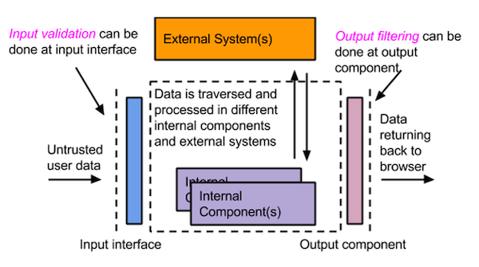
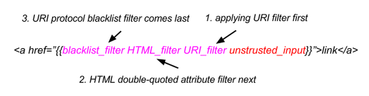

Cross Site Scripting (a.k.a. XSS) is still ranked among Top 3 in the OWASP Top 10 for more than a decade!
Cross Site Scripting (a.k.a. XSS) has long been ranked among Top 3 in the OWASP Top 10 for more than a decade. Web applications taking untrusted user inputs, keeping them intact without proper validations, and sending them back as part of the HTML are vulnerable to XSS. Attackers can execute arbitrary JavaScript in the vulnerable application, deface the website, and even steal users’ sessions and personal information. Given these severe consequences, XSS is unarguably a critical vulnerability.
Nevertheless, why is XSS still being ranked among consistently high in OWASP Top 10? In this article, we further elaborate the difficulty, and how we tackle this problem when designing XSS filters and automated secure handlebars solutions.
User input validation is implemented at the server-side, often as the first interface to validate all inputs before further processing; whereas output filtering is implemented as the last component at the output, right before the data is sent back to user’s browsers as shown in Figure 1 below. There is is no conflicting reason of just doing the filtering mechanism in one place, since it depends on the use case and functionality of your web applications.
Figure 1 - Input Validation v.s. Output Filtering
However, why does input filtering fail in most cases? It is because the first interfacing component of the system can never anticipate what system component comes next when we are developing the modern web applications at scale with different internal and external systems interacting with each other. As a consequence, input filtering can either be over-filtering or insufficient filtering, the first case definitely affects the normal functionality while the latter case can lead to XSS vulnerabilities. This scenario makes output filtering more suitable and effective in the validation/filtering strategy, as it is the last component of the web application returning data back to the user’s browser.
With the output filtering strategy in the design, it is still not easy to stop the XSS, as the developers need to understand the output contexts of the web applications and the execution order of the contexts in the web browsers.
Taking a HTML5 web application as an example, there are at least 4 superset classifications of output contexts, including HTML, CSS, JavaScript and URI, and each output context can be further broken down to finer granularity for classification. Based on our study, we have at least 25 output contexts if we just consider HTML and URI together, it means that we need at least 25 different types of filtering rules in practice.
Besides the number of combinations of different output contexts, the filtering order is also critical to the filtering mechanism. The filtering order must be the same as the execution order of the contexts being invoked by the web browser and with the blacklist filter at the end of the filtering rules. When the developer puts the untrusted user input at the “href” attribute value as shown in Figure 2, the correct order is to apply the URI validation before the HTML attribute value filtering and with the HTTP protocol blacklist filter at the end to make it secure. Figure 2 - User input at the "href" of the attribute value.
XSS-Filters is the context-aware output filters for web applications. The design principle is to apply the filtering rules based on the output contexts in order to achieve the goal of “Just sufficient filtering”. This design principle is to address over-filtering and insufficient filtering through context awareness in the output, in order to provide a developer friendly and secure solution to web applications.
In our solution, we provide a set of self-explanatory API(s) by chaining up the context-aware filters based on the most common developer use cases without the pain of understanding the browser execution context order and what contexts being invoked. If you want to apply our filters, you can check out this tutorial on how to apply the context-aware filters manually or our advanced automation solution provided.